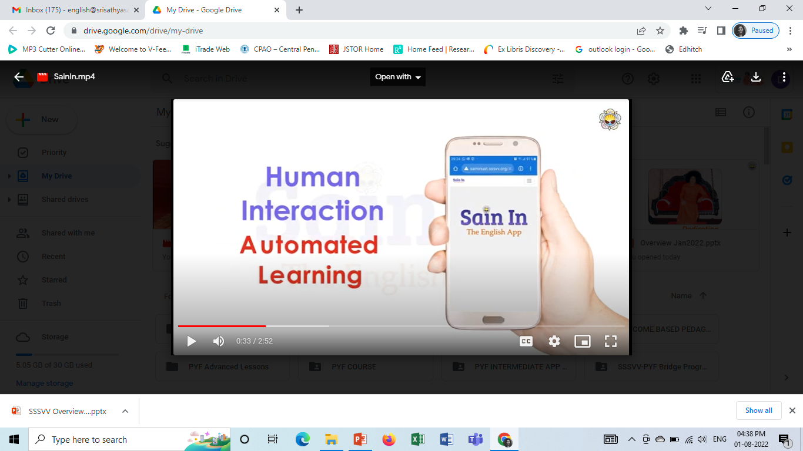
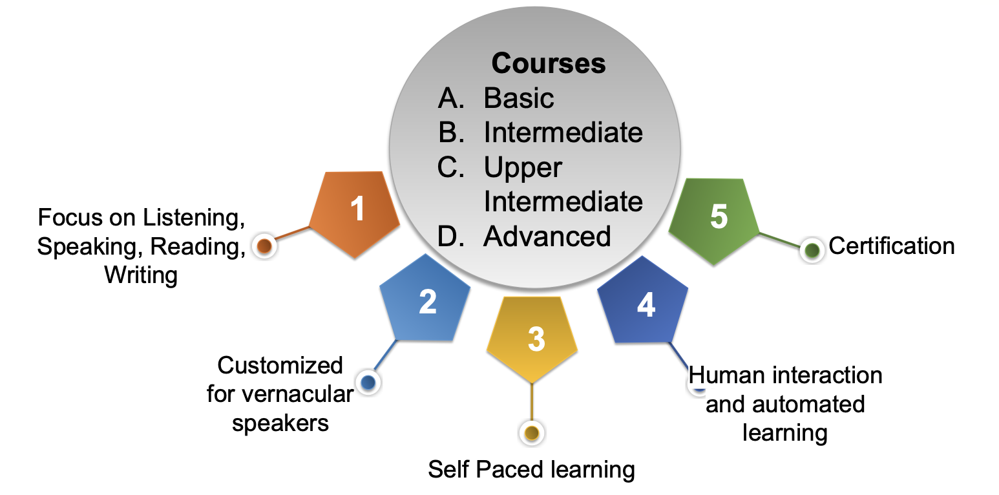
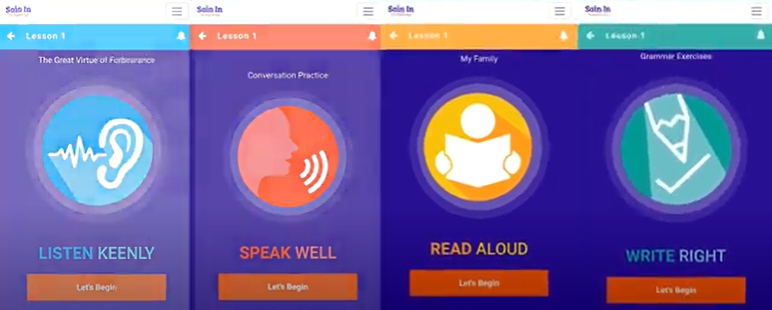
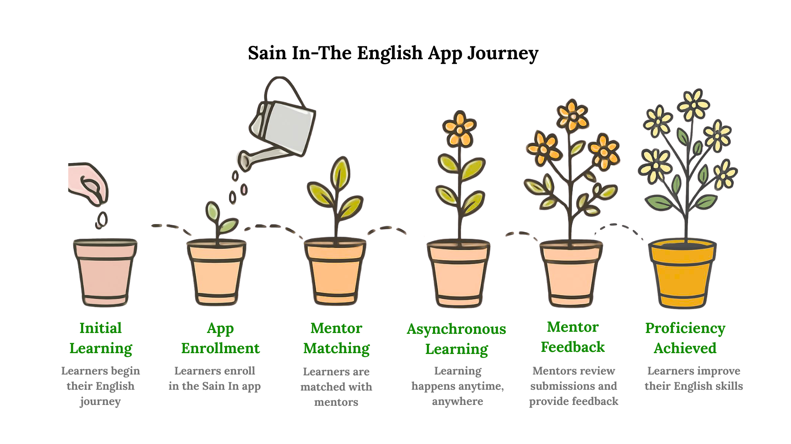
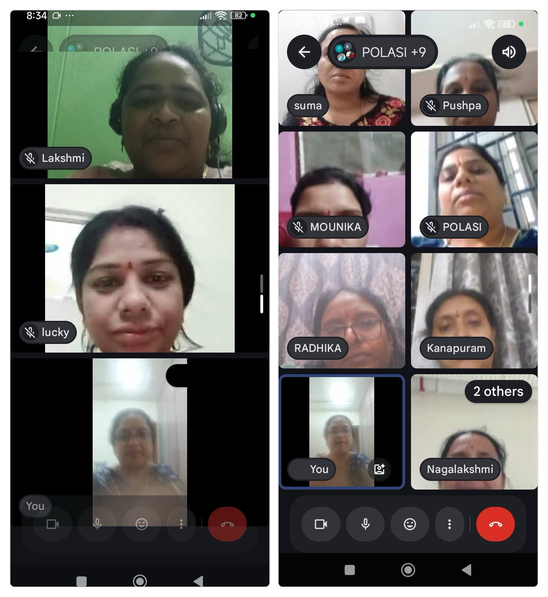
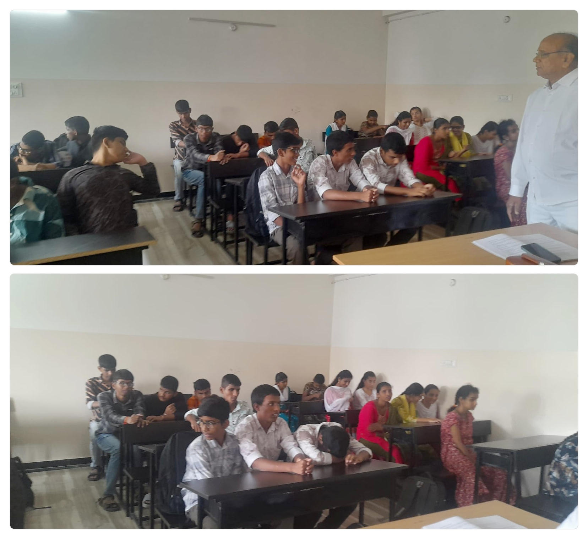
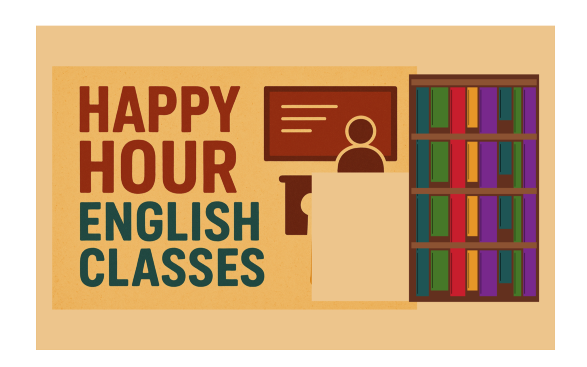
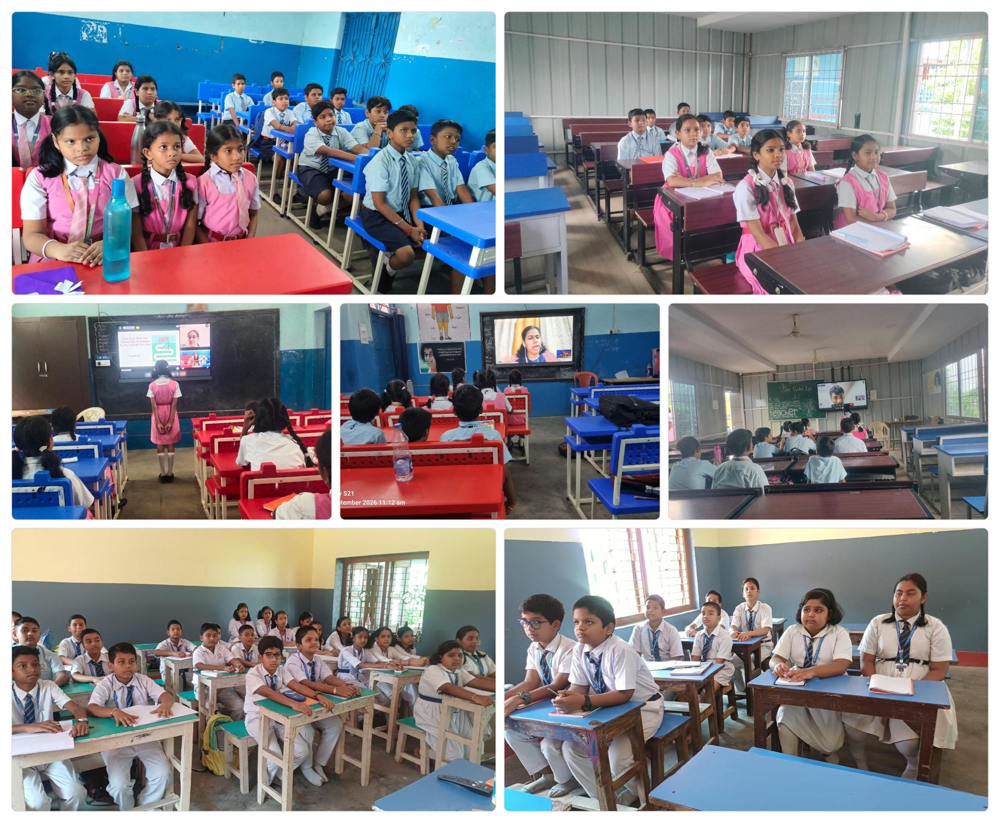
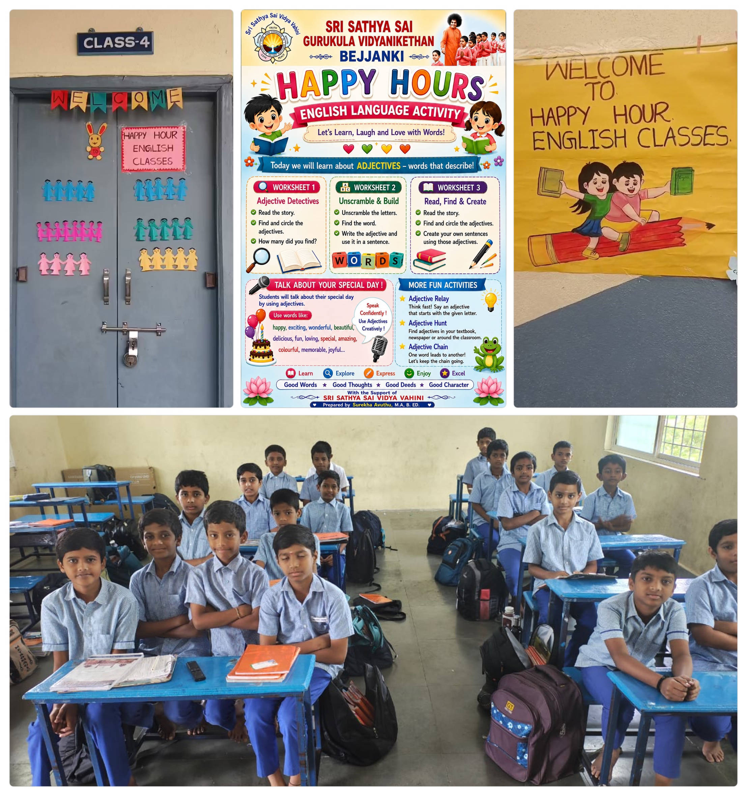

In aspirational India, learning English is considered a crucial component in the pursuit of social mobility and gainful employment. English has come to represent people’s aspirations, and proficiency in the language helps them to participate fully in national and international life. People view English as a unifying force in a global world. Language learners look forward to the felicity of expressing themselves fluently in a language, which opens avenues of success in life. English helps bind people from different states together, especially in a heterogeneous environment like India. As we move towards progress in an increasingly interconnected world, we are witnessing a notable increase in migration, both within our country and to foreign nations. English is, therefore, an essential skill for further education and employment in the country today.
Sri Sathya Sai Vidya Vahini’s Mission English offers the following programmes to help teachers, students and the youth of the country to empower themselves in English language proficiency.
SSSVV offers a five-course English proficiency programme to interested learners drawn from Sathya Sai Schools, non-Sai schools, youth and members of SSSSO, professionals and working adults from the industry. Available on the Google Play Store and offered free of cost, this hugely popular programme has seen a few thousand enrolments, and beneficiaries are connected to the mentors, with learning happening through the app.

Built on sound language learning principles, the programme follows a five-course curriculum, namely Elementary, Basic, Intermediate, Upper Intermediate and Advanced. The Elementary Course is conducted outside the app through Google Meet to make the learners comfortable with the process of language acquisition. They transition into the app to continue with the Basic course after completing the Elementary lessons, which serve as icebreakers.

Each course has thirty lessons with adequate focus on each of the skills namely - Listening, Reading, Speaking and Writing – LSRW – in short segments, with learners learning at their own pace.

The mentors go through a mandatory course on the Learning Management System of Sri Sathya Sai Vidya Vahini to certify them as competent trainers. The teaching-learning process is asynchronous, overcoming the limitations of time and place, as this has enabled people living all over the world to take on mentorship roles as they review submissions submitted by learners and send their feedback on the application. Notifications are received by the learners once their lessons are reviewed and they proceed on their learning journey. Thus, the mentors can be at any place, in any time zone, to train the learners.


Available on SSSVV’s learning management system, student.srisathyasaividyavahini.org (EIP), this five-module course focuses on developing essential English language skills for students of classes 9 to 12, aiming to prepare them for the English component of entrance examinations for higher education and enhance their performance in school-level English assessments. Students from across India are enrolled in the programme, which features modules on the ‘Sounds of English’—including homophones—alongside grammar worksheets, reading comprehension passages, spoken English lessons, and segments on email and essay writing.


Designed to bring joy to second-language learning, the fifty task-based lessons of the Happy Hour English programme feature value chants, songs, stories, role-plays, grammar exercises and spoken English lessons. These can be used by the teachers to complement their regular curriculum as a once-a-week add-on activity. A wholly flexible programme, teachers can use them for classes 3 to 8 based on the requirement of the school ensuring that the classes are inspiring, enjoyable and participatory.


In addition to serving the teachers from Sri Sathya Sai Schools, the youth and Balvikas gurus from SSSSO, Mission English supports the following institutions with its offerings:
Do you have good proficiency in English?
Are you interested in mentoring a teacher or an adult learner?
Can you spare at least an hour or two every week?
If you are interested in offering your service as part of nation building and teaching English to the disadvantaged
Please contact us at:
english@sssvv.org +91 77951 62410